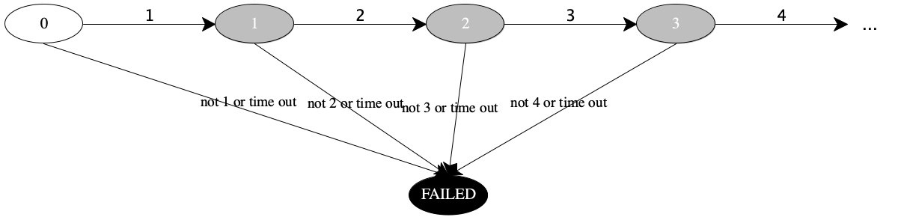
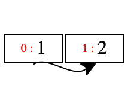
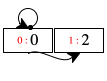
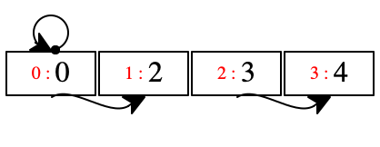
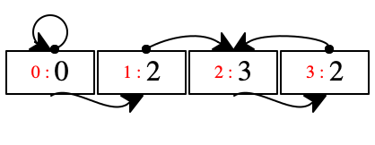
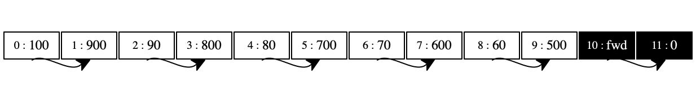
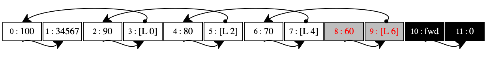
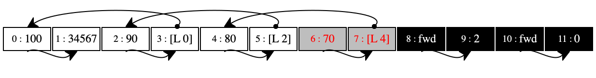
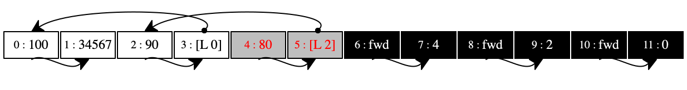

25 —
Tuesday, 07 April 2020
Presenters
A machine needs space to store the data needed for the evaluation of a program. The execution of instructions has different needs for different kinds of data. Let’s analyze where the data lives in our machine. Then we assess the kinds of space needed, and how managing storage works.
Which Instructions Need Space
Before we focus on the organization of the store itself, let’s briefly look at how the execution of instructions on the CESK machine consumes space.
Stop! Take a close look at figures 90 and 91
When does the environment grow? The machine adds a variable binding whenever the right-hand side of a decl is evaluated and the machine switches the execution of the decl’s body.
The environment never shrinks but the E register gets sometimes set to the empty environment, which may make certain branches of the environment tree unreachable.
When does the stack grow? The stack grows every time we evaluate the arguments of an application of a primitive function. It also grows when we evaluate the right-hand side of a decl. This second form of growth also tells us when the stack would grow for function applications:
current |
| next | ||||||||||||
C |
|
|
|
| C |
|
|
| ||||||
(call f e) |
|
|
|
| e |
|
|
| K, (F E f) | |||||
v |
| ∅ |
|
| K, (F E f) |
| (call f v) |
|
|
| ||||
(call f v) |
|
|
|
| e |
|
|
| K, (C E v) | |||||
<(fun x e),E> |
| ∅ |
|
| K, (C E v) |
| e |
| E, (x ↦ v) |
|
| |||
When does the stack shrink? The stack shrinks when the sub-expressions to function have been evaluated.
In our extremely small language, we don’t really have functions, we don’t have unlimited allocation of memory in any way whatsoever. But, if we imagine dynamic processes such as potentially recursive functions, mutually connected methods, while loops, etc., it is easy to see that we need to discuss where stack and store space is consumed.
Dybvig has demonstrated that such stack implementation on existing hardware stack cost one bit per frame and a word per finite stack segment. Although this cost isn’t zero, it is extremely low.
In particular, we cannot predict how deep arguments are nested in a language that permits cyclic references among its active entities (functions, methods). So while stacks have to be finite, they must be growable to arbitrary size. If a language supports "grab", this idea is a given. Other languages struggle to get this right.
Onward to stores. The store grows every time we evaluate an 'alloc expression on two values. Due to “old” jargon, we often speak of heap allocation. Programmers who use C-style languages still use this language, and from there it has leaped into the Java world. In addition to low-level alloc and malloc, high-level languages allocate memory in the store for lambda (pairing the code with the environment), new for the creation of objects, cons for constructing lists, and so on.
When does the store shrink? Not so far, and because dynamic programs allocate a lot of space in the store, we must figure out some means for shrinking it.
Where does All this Data Live?
The Code register points to the middle of a fixed tree of instructions. In a low-level setting we would use a sequence of instructions, not a tree. But the difference is inessential. The tree doesn’t change, though it does cause one artificial problem: the temporary injection of locations into reducible instructions. In such instructions, the location can be found to the immediate left and the immediate right of the operator.
Clearly, any location found in the C register is needed to complete the program evaluation.
Note In a low-level machine, these values would not go into the instruction sequence but in computational registers connected to the computational unit.
The Environment register points to a variable mapping, that is, some data structure that relates every variable name in the instruction register to a value.
Conservatively, any location in the environment must be retained to run the rest of the instructions.
As discussed in 24 —
Memory, Safety, the totality of environments— including those found in the stack— is a growing tree and the E register points to a particular end point in this tree. In reality this tree is allocated in the store and its retention is automatically covered by the rest of the algorithm. I have simplified the presentation by separating the space for environments from the store. 11 — CESK is still a simplification. A course on Programming Languages is about concepts not about the details of a garbage collector. Yet, for anyone who wishes to remove this simplification, the existence of nestable arrays in While suffices to do so, together with a static distance representation of variables. Note Technically, we could analyze the instructions in C and check whether some of these variables occur in parts of the tree that are provably not executed anymore. Good luck.
The stacK register contains a sequence of frames.
The sequence itself is a last-added/first-removed data structure. Its slogan also tells you that maintaining its space consumption is extremely cheap. Adding a frame is one instruction per element of the frame plus an instruction that records where the new top of the data structure is.
Each of our frames consists of essentially two pieces: a pointer into the above-mentioned tree of environments and a pointer into the fixed instruction tree. All locations in these environments must be retained, because the stacK structure represents the rest of the computation after the current code in C is done.
Tracing
What we just described—
The standard algorithm for finding the set of usefull locations “colors” the store’s locations “black,” “gray,” or “white.” A black location is live, and the pair at this location references only black and gray locations. In contrast, a gray location is useful, but the pair at that location might reference a white place in the store. Finally, a white location contains a potentially useless value. At the end of the coloring process, no locations are gray, and all white ones are garbage.
Color all locations white.
Color a location gray if it is reachable from the current environment.
For every environment referenced by the current continuation, color all its locations gray.
Now repeat the following steps until there are no gray-colored locations:
Choose a gray location, l.
If the value at l or l+1 is again a location, color them gray.
Color l black.
(decl 'x '(100 alloc 900) (decl 'x '(90 alloc 800) (decl 'x '(80 alloc 700) (decl 'x '(70 alloc 600) (decl 'x '(60 alloc 500) (decl 'x '(50 alloc 400) ; - - - - - - - - - - - - - - - - - - - - - - - - ; at this point we run out of space in the store ; - - - - - - - - - - - - - - - - - - - - - - - - (decl 'x '(40 alloc 300) (decl 'x '(30 alloc 200) (decl 'x '(20 alloc 100) (decl 'x '(10 alloc 0) 'x))))))))))
C contains '(40 alloc 300)
E contains ∅, ('x ↦ 10)
- K contains
[D E (decl 'x '(30 alloc 200) (decl 'x '(20 alloc 100) (decl 'x '(10 alloc 0) 'x)))]
Stop! Explain each of these four statements.





Operationally this description translates into a store that has only two cells
colored gray: see the first store in ~figure-ref{fig:gc-1}. The collector
picks those, colors them black, and leaves everything else alone because
locations 10 and 11 contain only plain integers. The fwd
label in 10 tells us that this pair will survive and the 0 in
11 show us in which location the pair will end up. Finally, the last
diagram shows the store after the garbage collection is over. It contains only
one pair—
(decl 'x 34567 (decl 'y '(100 alloc x) (decl 'x '(90 alloc y) (decl 'y '(80 alloc x) (decl 'x '(70 alloc y) (decl 'y '(60 alloc x) (decl 'x '(50 alloc y) ; - - - - - - - - - - - - - - - - - - - - - - - - ; at this point we run out of space in the store ; - - - - - - - - - - - - - - - - - - - - - - - - (decl 'y '(40 alloc x) 'x))))))))
C contains `(40 alloc ,[loc 10])
E contains ∅, ('x ↦ 10), ('y ↦ 8)
K contains [[#,@D E (decl 'y '(40 alloc x) 'x)]]






At this point in the execution, the store is a regular graph with numerous cross connections and even cycles. Take a look at the first store in figure 94. Every even-numbered location points to the right, because a program may reach this location via '(_ dot right) and '(_ set-right _). Every odd-numbered location contains a location, marked as [L n] for some number n. Graphically these locations are related to the left-most neighbor of the pair.
Figure 94 also shows two gray pairs in this first store: our gray locations. The pair at location 10 is reachable from both the C register and the environments in the E and K registers. The pair at 8 is only reachable from E.
The six stores below the first in figure 94 illustrate how the garbage collector works it way through the store. Our collector starts with the rightmost pair, “forwards” it to the black pool, and thus marks it as saved. Then the algorithm progressively traverses the store from the right to the left until all locations have been painted black.
Stop! What does this mean?
The final store in figure 94 shows how the collector re-allocated pairs as they were marked as survivors. In this store, the pairs are allocated in reverse order from the very first store. The relationships among them are the same: the right side of each pair points to the same pair as in the first store.
However, the collector filled the entire store again with the surviving
pairs—
Implementation
The addition of a garbage collector causes a linguistic dilemma, namely, what
to call the program that actually uses the space in a store. In our case it is
a CESK machine; if we had CPS transformed our interpreter, the space-consuming
program could be an interpreter. But, this space consuming program doesn’t
have to be one of those special programs. When a compiler translates a source
program to a target program, the garbage collector collaborates with an
arbitrary program—

alloc, retrieve, and update—
the three functions that the memory manager supplies to mutators find-roots—
a function with which the mutator implements steps 1 through 3 of the algorithm, that is, the discovery of root locations.
; (list Value o Value) Store -> Number Store (define (reduce ae S) (match ae [(list val1 'alloc val2) (define-values (loc S+) (alloc S (map root->loc (list val1 val2)))) (values (root loc) S+)] [(list r 'set-left v) (define l (root->loc r)) (values (loc->root (retrieve S l)) (update S l v))] ...)) ; Location -> Root (define (root->loc val) (if (root? val) (loc (root-ref val)) val)) ; Root -> Location (define (loc->root val) (if (loc? val) (root (loc-ref val)) val))
Lectures/25/find-roots.rkt
#lang racket ;; Find the roots in the registers of a C E S K machine (provide ;; for pedagogic reasons, we tag them differently from locs: (struct-out root) #; {Exp Env Store Stack -> [Listof root]} find-roots) ;; - - - - - - - - - - - - - - - - - - - - - - - - - - - - - - - - - (require "show-with-store.rkt") (require "locs-and-roots.rkt") (require "../21/while.rkt") ;; - - - - - - - - - - - - - - - - - - - - - - - - - - - - - - - - - (define (find-roots C E S K) (define lst (append (find-in-C C) (find-in-E E) (find-in-K K))) (set->list (apply set lst))) #; {Control -> [Listof root]} (define (find-in-C cc) (match cc [(? root? l) (list cc)] [(list (? root? L) o (? root? R)) (list L R)] [(list (? root? L) o _) (list L)] [(list _ o (? root? R)) (list R)] [_ '[]])) #; {Env -> [Listof root]} ;; ASSUME Env = [Listof [List Var Value]] (define (find-in-E env [vars-seen '()]) (cond [(empty? env) '()] [else (match-define (list x val) (first env)) (if (or (member x vars-seen) (number? val)) (find-in-E (rest env) (cons x vars-seen)) (cons val (find-in-E (rest env) (cons x vars-seen))))])) #; {Stack -> [Listof root]} (define (find-in-K stack) (append-map find-Frame-roots stack)) #; {Frame -> [Listof root]} ;; ASSUME all frames contain the environment in the same spot (define (find-Frame-roots frame) (match frame [(list _tag env _op possibly-root) (define roots (find-in-E env)) (if (root? possibly-root) (cons possibly-root roots) roots)]))
; {Expr [-> [listof loc]] -> Expr Env Store Stack} (define (load ae fr) (define plain (make-plain fr)) (values ae '[] plain mt))
Lectures/25/heaps.rkt
#lang racket (provide SPACE ;; the number of locations in a store SIZE ;; size of allocated blocks #; {type Heap} (struct-out heap) #; {[Listof Location] -> Heap} make-plain) ;; - - - - - - - - - - - - - - - - - - - - - - - - - - - - - - - - - (define SPACE 12) (define SIZE 2) (struct heap [ store ;; [Vectorof Value] : actual storage secondary ;; [Vectorof Value] : swap-in storage {next #:mutable} ;; Nat : next place to place value into `store` roots ;; [-> (Listof Location)] : find root locations ] #:transparent) (define (make-plain (find-roots (lambda () '[]))) (heap (make-vector SPACE #f) (make-vector SPACE #f) 0 find-roots))
The API of the store remains the same but the implementation of the three
functions changes slightly; see figure 98. Indeed, the
advertised API (see provide) has always just stated that there is
a kind of value called Store without detailing what it
is. Internally the new component uses Heaps as stores. The three
exported functions—
The key function is an internal one: alloc-proper. It first checks whether there is enough space left in the primary store. If so, it places the given values into the primary storage of the given heap and updates the next field appropriately; the result is the location of this new block of values. If there isn’t enough space, it signals this fact with #false.
Lectures/25/store-finite.rkt
#lang racket (provide ;; - - - - - - - - - - - - - - - - - - - - - - - - - - - - - - - #; {type Store} #; {[-> [Listof Location]] -> Store} ;; create (initialize) a store ;; EFFECT squirrel away a function that delivers a list of root locs make-plain #; {Store [Listof Value : SIZE] ->* Location Store} alloc #; {Store Location -> Value} retrieve #; {Store Location Value -> Store} update) ;; - - - - - - - - - - - - - - - - - - - - - - - - - - - - - - - - - (require "locs-and-roots.rkt") (require "heaps.rkt") (require "collect.rkt") ;; - - - - - - - - - - - - - - - - - - - - - - - - - - - - - - - - - #; {type Store ~ Heap} (define (alloc h vals) (define new (alloc-proper h vals)) (cond [new (values (loc new) h)] [else (displayln '[collecting garbage]) (define g (collect h)) (define new2 (alloc-proper g vals)) (values (loc (or new2 (error 'alloc "out of space"))) g)])) #; {Heap [Listof Value : SIZE] -> (U #false Location)} (define (alloc-proper h vals) (cond [(<= (+ (heap-next h) SIZE) SPACE) (begin0 (heap-next h) (for ([v vals]) (vector-set! (heap-store h) (heap-next h) v) (set-heap-next! h (+ (heap-next h) 1))))] [else #false])) (define (retrieve s loc) (vector-ref (heap-store s) (loc-ref loc))) (define (update s loc val) (vector-set! (heap-store s) (loc-ref loc) val))
When alloc finds out that it is not possible to place the given
values into the primary storage, it calls collect. This call
yields a new heap in which the primary and secondary storage parts have
switched roles. The content of the useful locations—
At last, we can inspect the garbage collector itself; see figure 99.
Lectures/25/collect.rkt
#lang racket (provide #; {Heap -> Heap} ;; collect the garbage and switch the two stores in the heap collect) ;; - - - - - - - - - - - - - - - - - - - - - - - - - - - - - - - - - (require "heaps.rkt") (require "locs-and-roots.rkt") (require "store-list.rkt") (require "../21/while.rkt") ;; - - - - - - - - - - - - - - - - - - - - - - - - - - - - - - - - - (define VISITED 'fwd) ;; the "black" location marker (define (collect h) (match-define (heap store secondary _ *find-roots) h) (define nuheap (heap secondary store 0 *find-roots)) (define roots0 (*find-roots)) (define *roots (roots->locs roots0)) (while (cons? *roots) do ;; pick a gray locatuon (define the-gray (loc-ref (first *roots))) (set! *roots (rest *roots)) (unless (eq? (vector-ref store the-gray) VISITED) (for* ((i (in-range SIZE)) [val (in-value (vector-ref store (+ the-gray i)))]) ;; re-allocate in `secondary (vector-set! secondary (heap-next nuheap) val) (set-heap-next! nuheap (+ (heap-next nuheap) 1)) ;; identify additional gray locations (when (loc? val) (set! *roots (cons val *roots)))) ;; paint `the-gray` black (vector-set! store (+ the-gray 1) (- (heap-next nuheap) SIZE)) (vector-set! store the-gray VISITED))) ;; adjust locations in `secondary` ; all necessary values are moved (for* ([i (in-range (heap-next nuheap))] [val (in-value (vector-ref secondary i))] #:when (loc? val)) (vector-set! secondary i (loc (forward store (loc-ref val))))) ;; updates root cells in mutator (for ([r roots0]) (set-root-ref! r (forward store (root-ref r)))) nuheap) (define (forward store place) (vector-ref store (+ place 1))) (define (roots->locs r*) (map (λ (r) (loc (root-ref r))) r*))
The first part swaps the secondary and primary storage facilities and sets the next pointer back to 0 because no space has been used yet.
While our code creates a new heap, an actual collector merely changes a pointer from one part of the hardware memory to another.
The second part is an implementation of our algorithm specification from above.
The first two lines are steps 1 through 3, relying on find-roots from figure 96.
The while loop represents the fourth step, the systematic re-painting of the primary store. The inner for* loop moves the storage block identified by the-gray-loc to the new primary storage facility. If any of the values in this block are locations, they are added to the root set. The final two lines of the while loop paint the location black—
specifically, they mark it as moved by putting a VISITED marker into the first location of the moved block and its new location in nuheap in the second. The loops per se do not need space, though keeping track of the gray locations—
the *roots list— does. For this to work, an actual collector needs to reserve a bit of space or sacrifice additional bits in words for tagging. The third part of collect updates the locations that have been copied to secondary by retrieving them from store, the primary storage facility of the given heap.
The last for loop updates the root fields in the C, E, and K that collect obtained from find-roots.
Embarrassing Pauses
A tracing garbage collector stops the mutator—
This stop-and-pause the mutator action may lead to so-called “embarrassing
pauses,” a time when some program seemingly does nothing. While modern
collectors have reduced the duration of these pauses to an often tolerable
span, all of you have encountered these pauses—
These pauses and other aspects of garbage collection keep researchers in this field on their toes, and the area remains rather active.